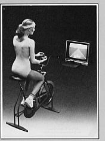

Suncom Aerobics Joystick
An exercise bike adapter for the Atari 2600 that translated pedaling speed into proportional game input — cardiovascular exergaming, 35 years before Peloton

Overview
The Suncom Aerobics Joystick, released in 1983 by Suncom, Incorporated of Northbrook, Illinois, was a third-party peripheral for the Atari 2600 and Atari 8-bit computers that interfaced a standard home stationary exercise bicycle with the game console. Priced at $39.95, it consisted of an interface adapter box, a conventional Atari-compatible joystick, a handlebar-mounted fire button, and a magnetic sensor pickup for the exercise bike's flywheel.
The adapter converted pedaling speed into a variable-rate stream of fire button presses: the faster the player pedaled, the more rapidly the fire button signal was sent to the console. The joystick provided normal directional control, allowing simultaneous steering and pedal-driven shooting. The device worked with any Atari 2600 game that benefited from rapid fire — Enduro (Activision), Galaxian (Atari), Defender (Atari), and Zaxxon (Datasoft) were recommended. Installation was advertised as taking ten minutes.
Suncom was a small controller manufacturer whose other products included the Slik Stik, Starfighter, and TAC-2 joysticks. The company survived the 1983 video game crash and continued making controllers into the early 1990s. The Aerobics Joystick was extraordinarily obscure: only one first-person user account survives (a February 1984 letter to ANTIC magazine), and no known units exist in collector hands today. Despite its commercial failure, it pioneered the paradigm of sustained cardiovascular exertion as proportional game input — the same principle used by modern connected fitness platforms like Peloton and Zwift.
Deep dive
The Aerobics Joystick emerged at the intersection of two early-1980s consumer phenomena: the home exercise bike boom and the Atari 2600's dominance. By 1983, millions of American households had both a stationary exercise bike and a game console. Suncom's insight — that combining them would make both less boring — was prescient. The product was announced in mid-1983 through trade magazines (COMPUTE! July 1983, ANTIC September 1983) and sold through retail alongside Suncom's other controller products. The 1983 video game crash likely killed its commercial prospects within a year.
The adapter used a magnetic reed switch pickup mounted on the exercise bike's frame, with a small magnet affixed to the flywheel or pedal crank. Each revolution produced one magnetic pulse. An analog pulse-to-frequency converter circuit (likely a 555 timer or similar RC oscillator) inside the adapter box converted the incoming pulse frequency into a variable-rate square wave that toggled the Fire line of the Atari joystick port. Faster pedaling → higher pulse frequency → faster fire button presses. The Atari 2600 joystick port only supports 5 digital on/off lines (Up, Down, Left, Right, Fire), so true analog input was impossible. The Aerobics Joystick worked around this limitation by using fire button auto-fire as a proxy for proportional exertion — a clever hack within severe hardware constraints. The joystick's directional lines passed through conventionally, allowing simultaneous steering and pedal-driven shooting.
In the February 1984 issue of ANTIC magazine, a reader named Helen Phillips from Arvada, Colorado wrote to the I/O Board letters column about her experience with the Aerobics Joystick. Her letter is the only known first-person account of the device in use: "The most important thing to remember is that the faster you pedal, the faster the fire button shoots. Also, you can't aim very precisely when you're pedalling away at 20 miles per hour." She reported playing Galaxian and finding it "a lot of entertainment" during exercise sessions. This single paragraph from a 1984 computer magazine is the only surviving testimony of what it felt like to actually use the device — a reminder of how many obscure peripherals have left almost no trace.
The Aerobics Joystick sits at the beginning of a lineage that includes Atari's cancelled Project Puffer (1984, a more ambitious exercise bike interface for the 5200), the ExerVision Bicycle Trainer (1985, an unreleased 2600 prototype), the Autodesk HighCycle (1983, a VR exercise bike concept), and eventually modern platforms like Peloton and Zwift. All use the same core paradigm: sustained physical exertion rate as proportional in-game action. The Aerobics Joystick was the first product to actually ship with this concept — crude, constrained by 1983 hardware, and commercially doomed, but first.
Team & pioneers
- Suncom, Incorporated. Joystick and game controller manufacturer based at 650 E. Anthony Trail, Northbrook, Illinois. Active from approximately 1982 through the early 1990s. No individual designer or engineer for the Aerobics Joystick has been publicly identified.
- Helen Phillips (Arvada, CO). The only documented user of the Aerobics Joystick whose account survives, via a February 1984 letter to ANTIC magazine.
Media

Sources
- ANTIC Magazine Vol 2 No 6 (Sep 1983) — New Products announcement with price and game recommendation
- ANTIC Magazine Vol 2 No 11 (Feb 1984) — I/O Board: the only known first-person user account of the Aerobics Joystick in use
- COMPUTE! Issue 38 (Jul 1983) — Suncom company and product line announcement including the Aerobics Joystick
- AtariHQ Museum — Aerobics Joystick entry with product photo
- Atari Compendium — VCS/2600 Controllers page with Aerobics Joystick entry and photos
- DVG — Dizionario dei VideoGiochi (Italian) — Aerobic Joystick entry noting limited distribution
- Wikipedia — TAC-2 joystick article (Suncom company context)
- AtariProtos — ExerVision Bicycle Trainer (related unreleased 1985 exergaming prototype)